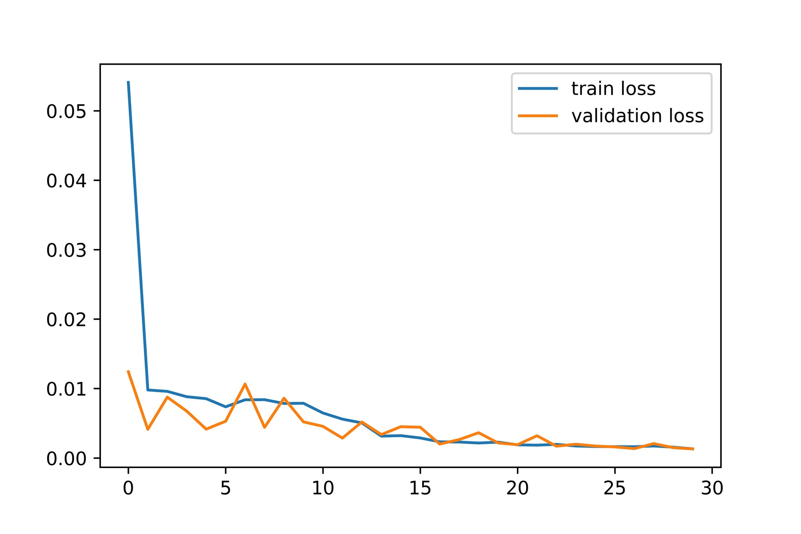
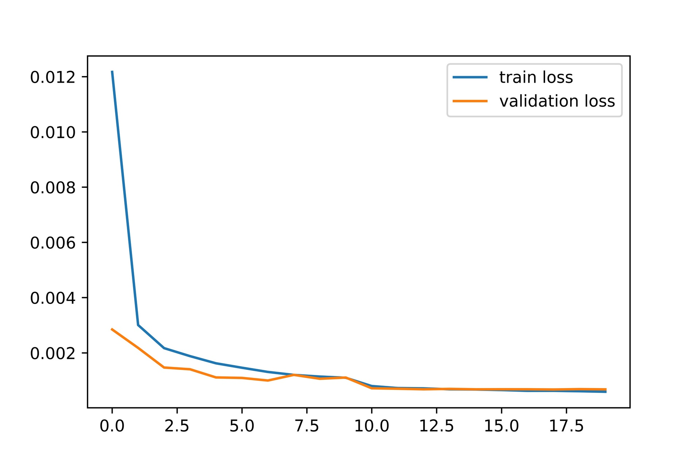
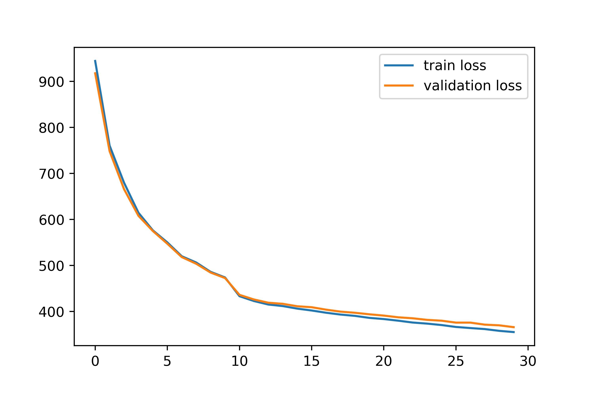

Songwen Zhao | songwenzhao (at) berkeley (dot) edu
This is a really interesting project for building facial landmarks detector with neural networks. We will go all the way through the simplest CNN, ResNet and the SOTA Image-to-Image UNet, implementing them and analyzing their performance. It's my first time using PyTorch and being able to finally achieve so much is really cool and rewarding.
In this part, we will design and train a simple CNN to detect nose tip keypoint using the IMM Face Database.
First, to make sure I was loading the images and the keypoints correctly, I sampled a few images and display them along with the ground truth nose keypoints as below.
The CNN I designed has 3 convolutional layers, 12 7x7 filters for conv1, 16 5x5 filters for conv2, and 32 3x3 filters for conv3. The input image size is 60 by 80, after coonvolutional layers the image size shrink to 4 by 7. So this results in the first fully connected layer to have input size 32x4x7=896. I chose first fully connected layer with 128 output features, and leave the last fully connected layer to have input 128 and output 2.
I trained the model for 25 epochs with lr=1e-3. Below are the train and validation MSE loss during the training process.
See below for some example results from performance on the validation set, where red point is the network's prediction and the green point stands for the ground truth. This simple model seemed to work decently, but was likely to mislabel when the face is not from straight on, as shown in (c) and (d) below. This is probably because that, since our network is small and our training data is not enough, the model couldn't distinguish between side face and front face.
(a) correct
(b) correct
(c) incorrect
(d) incorrect
Based on what we have achieved in part1, we are now moving forward and detecting all 58 facial landmarks with a bigger CNN.
This time, since our dataset is small, we need data augmentation to prevent our model from overfitting. What I did includes randomly rotating the face for -15 to 15 degrees and randomly shifting the face for -20 to 20 pixels. Here I sampled a few training images after data augmentation and display them along with the ground truth facial landmarks as below.
I made my CNN slightly more complicated this time, with 5 convolutional layers and 2 fully connected layers, doubling the number of channels per convolutional layer as the network got deeper. The last fully connected layer outputs 116 predictions (58 * 2 (x, y) coordinates). See below for more details about the network's architecture.
Net(
(conv1): Conv2d(1, 12, kernel_size=(3, 3), stride=(1, 1))
(conv2): Conv2d(12, 24, kernel_size=(3, 3), stride=(1, 1))
(conv3): Conv2d(24, 48, kernel_size=(3, 3), stride=(1, 1))
(conv4): Conv2d(48, 96, kernel_size=(3, 3), stride=(1, 1))
(conv5): Conv2d(96, 192, kernel_size=(3, 3), stride=(1, 1))
(fc1): Linear(in_features=2880, out_features=1024, bias=True)
(fc2): Linear(in_features=1024, out_features=116, bias=True)
)
I trained the model for 30 epochs with lr=1e-3. Below are the train and validation MSE loss during the training process.
Evaluating the model on the validation set, I found that it yielded pretty good results on more 'average' faces while struggled with faces either too thin or too wide, as shown below in (d). Also, similar to part1, the model was more likely to fail in the case of side faces as shown below in (c).
(a) correct
(b) correct
(c) incorrect
(d) incorrect
The learned filters of the first two convolutional layers are visualized as follows.
We will be using a larger dataset and ResNet to train a facial keypoints detector that is much more powerful!
From the ibug dataset, using the this data augmentation as in part2, I sampled a few training images and display them along with the ground truth facial landmarks as below.
For this part, we were suggested to use small standard CNN models so I chose to go with ResNet18 with two small modifications. For the first layer change the input channel to 1 cause our inputs are grayscale images, for the last fully connected layer change the output feature to 132 since we have 68 landmark coordinates to output. Its design is shown in the diagram below.
I trained the model for 10 epochs with lr=2e-4, and another 10 epochs with lr=5e-5. Below are the train and validation MSE loss during the training process.
Even on such a wild dataset, the results we got are pretty good. Here I visualized some images with predicated keypoints from the test set.
I also ran the trained model on my own photo collection, as shown below. (a) and (c) basically worked while the model failed on (b). I think it's because that in the image my head is rotated too much even exceeding the range data augmentation covers (-15 to 15 degrees).
(a) me in middle school
(b) me in high school
(c) Chinese actress Zhou Xun
Basically the same logic as in part3, but turning regression to a classification problem and using a more SOTA image-to-image network for better performance.
To turn our regression problem into a pixelwise classification, we use heatmaps instead of landmarks as our lable. To generate heatmaps, I placed a 2D Gaussian of sigma=5, kernel_size=13 at the ground truth coordinate location in the map. I also tried other methods, for example placing 9 Gaussians of sigma=2 at a 3 by 3 patch around the ground truth coordinate, but didn't get better results. For Bells & Whistles, I tried to use1 and 0 mask heatmaps, placing a 5 by 5 patch the ground truth coordinate location, and found the model performed worse. Here I visualized two images along with their accumulated heatmaps from the training set.
For training, I chose the untrained UNet, changed its input channel to 1, output channel to 68, init feature to 68 and the activation function of the last layer from sigmoid to softmax by overriding the its 'forward' function. See below for more details about the model's architecture. After I got my final results, I also tried not to change the activation function. It turns out to perform badly even with more training epochs.
MyUNet(
(encoder1): Sequential(
(enc1conv1): Conv2d(1, 68, kernel_size=(3, 3), stride=(1, 1), padding=(1, 1), bias=False)
(enc1norm1): BatchNorm2d(68, eps=1e-05, momentum=0.1, affine=True, track_running_stats=True)
(enc1relu1): ReLU(inplace=True)
(enc1conv2): Conv2d(68, 68, kernel_size=(3, 3), stride=(1, 1), padding=(1, 1), bias=False)
(enc1norm2): BatchNorm2d(68, eps=1e-05, momentum=0.1, affine=True, track_running_stats=True)
(enc1relu2): ReLU(inplace=True)
)
(pool1): MaxPool2d(kernel_size=2, stride=2, padding=0, dilation=1, ceil_mode=False)
(encoder2): Sequential(
(enc2conv1): Conv2d(68, 136, kernel_size=(3, 3), stride=(1, 1), padding=(1, 1), bias=False)
(enc2norm1): BatchNorm2d(136, eps=1e-05, momentum=0.1, affine=True, track_running_stats=True)
(enc2relu1): ReLU(inplace=True)
(enc2conv2): Conv2d(136, 136, kernel_size=(3, 3), stride=(1, 1), padding=(1, 1), bias=False)
(enc2norm2): BatchNorm2d(136, eps=1e-05, momentum=0.1, affine=True, track_running_stats=True)
(enc2relu2): ReLU(inplace=True)
)
(pool2): MaxPool2d(kernel_size=2, stride=2, padding=0, dilation=1, ceil_mode=False)
(encoder3): Sequential(
(enc3conv1): Conv2d(136, 272, kernel_size=(3, 3), stride=(1, 1), padding=(1, 1), bias=False)
(enc3norm1): BatchNorm2d(272, eps=1e-05, momentum=0.1, affine=True, track_running_stats=True)
(enc3relu1): ReLU(inplace=True)
(enc3conv2): Conv2d(272, 272, kernel_size=(3, 3), stride=(1, 1), padding=(1, 1), bias=False)
(enc3norm2): BatchNorm2d(272, eps=1e-05, momentum=0.1, affine=True, track_running_stats=True)
(enc3relu2): ReLU(inplace=True)
)
(pool3): MaxPool2d(kernel_size=2, stride=2, padding=0, dilation=1, ceil_mode=False)
(encoder4): Sequential(
(enc4conv1): Conv2d(272, 544, kernel_size=(3, 3), stride=(1, 1), padding=(1, 1), bias=False)
(enc4norm1): BatchNorm2d(544, eps=1e-05, momentum=0.1, affine=True, track_running_stats=True)
(enc4relu1): ReLU(inplace=True)
(enc4conv2): Conv2d(544, 544, kernel_size=(3, 3), stride=(1, 1), padding=(1, 1), bias=False)
(enc4norm2): BatchNorm2d(544, eps=1e-05, momentum=0.1, affine=True, track_running_stats=True)
(enc4relu2): ReLU(inplace=True)
)
(pool4): MaxPool2d(kernel_size=2, stride=2, padding=0, dilation=1, ceil_mode=False)
(bottleneck): Sequential(
(bottleneckconv1): Conv2d(544, 1088, kernel_size=(3, 3), stride=(1, 1), padding=(1, 1), bias=False)
(bottlenecknorm1): BatchNorm2d(1088, eps=1e-05, momentum=0.1, affine=True, track_running_stats=True)
(bottleneckrelu1): ReLU(inplace=True)
(bottleneckconv2): Conv2d(1088, 1088, kernel_size=(3, 3), stride=(1, 1), padding=(1, 1), bias=False)
(bottlenecknorm2): BatchNorm2d(1088, eps=1e-05, momentum=0.1, affine=True, track_running_stats=True)
(bottleneckrelu2): ReLU(inplace=True)
)
(upconv4): ConvTranspose2d(1088, 544, kernel_size=(2, 2), stride=(2, 2))
(decoder4): Sequential(
(dec4conv1): Conv2d(1088, 544, kernel_size=(3, 3), stride=(1, 1), padding=(1, 1), bias=False)
(dec4norm1): BatchNorm2d(544, eps=1e-05, momentum=0.1, affine=True, track_running_stats=True)
(dec4relu1): ReLU(inplace=True)
(dec4conv2): Conv2d(544, 544, kernel_size=(3, 3), stride=(1, 1), padding=(1, 1), bias=False)
(dec4norm2): BatchNorm2d(544, eps=1e-05, momentum=0.1, affine=True, track_running_stats=True)
(dec4relu2): ReLU(inplace=True)
)
(upconv3): ConvTranspose2d(544, 272, kernel_size=(2, 2), stride=(2, 2))
(decoder3): Sequential(
(dec3conv1): Conv2d(544, 272, kernel_size=(3, 3), stride=(1, 1), padding=(1, 1), bias=False)
(dec3norm1): BatchNorm2d(272, eps=1e-05, momentum=0.1, affine=True, track_running_stats=True)
(dec3relu1): ReLU(inplace=True)
(dec3conv2): Conv2d(272, 272, kernel_size=(3, 3), stride=(1, 1), padding=(1, 1), bias=False)
(dec3norm2): BatchNorm2d(272, eps=1e-05, momentum=0.1, affine=True, track_running_stats=True)
(dec3relu2): ReLU(inplace=True)
)
(upconv2): ConvTranspose2d(272, 136, kernel_size=(2, 2), stride=(2, 2))
(decoder2): Sequential(
(dec2conv1): Conv2d(272, 136, kernel_size=(3, 3), stride=(1, 1), padding=(1, 1), bias=False)
(dec2norm1): BatchNorm2d(136, eps=1e-05, momentum=0.1, affine=True, track_running_stats=True)
(dec2relu1): ReLU(inplace=True)
(dec2conv2): Conv2d(136, 136, kernel_size=(3, 3), stride=(1, 1), padding=(1, 1), bias=False)
(dec2norm2): BatchNorm2d(136, eps=1e-05, momentum=0.1, affine=True, track_running_stats=True)
(dec2relu2): ReLU(inplace=True)
)
(upconv1): ConvTranspose2d(136, 68, kernel_size=(2, 2), stride=(2, 2))
(decoder1): Sequential(
(dec1conv1): Conv2d(136, 68, kernel_size=(3, 3), stride=(1, 1), padding=(1, 1), bias=False)
(dec1norm1): BatchNorm2d(68, eps=1e-05, momentum=0.1, affine=True, track_running_stats=True)
(dec1relu1): ReLU(inplace=True)
(dec1conv2): Conv2d(68, 68, kernel_size=(3, 3), stride=(1, 1), padding=(1, 1), bias=False)
(dec1norm2): BatchNorm2d(68, eps=1e-05, momentum=0.1, affine=True, track_running_stats=True)
(dec1relu2): ReLU(inplace=True)
)
(conv): Conv2d(68, 68, kernel_size=(1, 1), stride=(1, 1))
)
I used the L1Loss as my loss function and trained the model for 10 epochs with lr=1e-3, 20 epochs with lr=2e-4. Below are the train and validation loss during the training process.
For turing the heatmap predication back to landmark, I did a weighted average of the x,y coordinates of all pixels using heatmap as weights. Here are my final results on the test set.
I also ran the trained model on my own photo collection, as shown below. The results are much better than part3, surprisingly perfect for all the images!!
(a) me in middle school
(b) me in high school
(c) Chinese actress Zhou Xun
It's time to test our model!
For class Kaggle competition, I used my best model from part3 and achieved an MAE of 8.30587!
created with
Website Builder Software .